GAME GUIDE BOOK
คู่มือการเล่น Paws & Phases
วิธีเล่น · ส่วนต่าง ๆ ของหน้าจอ · ไอเทม · 7 สายวิวัฒนาการและเงื่อนไข · แชท · ควบคุมด้วยมือ
★ยินดีต้อนรับสู่ Paws & Phases
Paws & Phases คือเกมเลี้ยงหมาหรือแมวที่ เปลี่ยนร่างตามวิธีที่เราเลี้ยง ทุกวันในเกม เราเลือกได้ว่าจะให้อาหาร เล่นด้วย อาบน้ำ หรือให้นอน พอจบวัน AI จะดูว่าวันนั้นเลี้ยงแบบไหน แล้วให้สัตว์เติบโตไปตาม สายวิวัฒนาการ ที่ตรงกับนิสัยการเลี้ยงนั้น
- 2 สัตว์ให้เลือก: หมา 🐶 หรือ แมว 🐱
- 7 สายวิวัฒนาการ แต่ละสายมี 5 ร่าง หน้าตาและนิสัยต่างกัน (รวม 58 ร่าง)
- 1 วันในเกม = 3 นาที (ปรับเป็น 5, 7 หรือ 10 นาทีได้ในเมนู)
- คุยกับสัตว์ได้เป็นภาษาไทย ทั้งพิมพ์ พูดผ่านไมค์ หรือส่งอีโมจิ
- เล่นด้วยมือผ่านกล้องได้ เหมือนแตะจอมือถือ
สารบัญ
1เริ่มเกม
2หน้าเลี้ยงสัตว์
3ค่าสถานะและ Social
4เมนู Grooming และไอเทม
5อารมณ์ของสัตว์
6วัน เวลา และ NEXT DAY
7การวิวัฒนาการ
87 สายวิวัฒนาการ
9Hint · Profile · Evolution Book
10คุยกับสัตว์ (แชท)
11ควบคุมด้วยมือผ่านกล้อง
12เมนูและการบันทึกเกม
13เคล็ดลับและคำถามที่พบบ่อย
อ่านอย่างไร: ชื่อปุ่มในเกมเป็นภาษาอังกฤษ ในคู่มือจะเขียนเป็นป้ายแบบนี้ NEXT DAY เพื่อให้หาบนหน้าจอได้ง่าย
1เริ่มเกม
หน้าปก
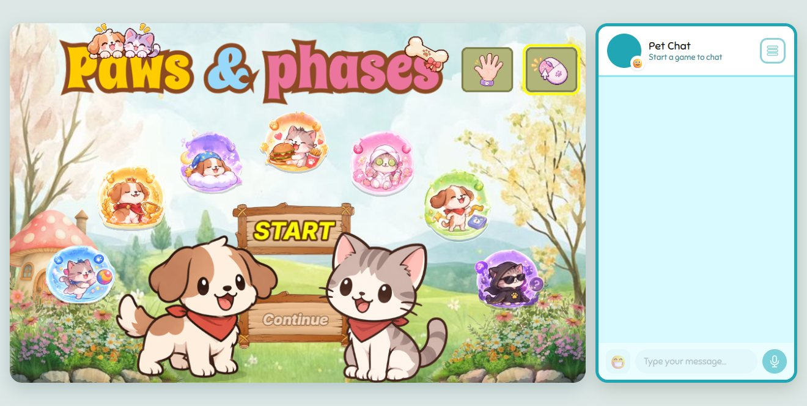
1START เริ่มเลี้ยงสัตว์ตัวใหม่
2Continue เล่นต่อจากไฟล์ที่บันทึกไว้ (จางอยู่ถ้ายังไม่มีเซฟ)
3ปุ่ม มือ ✋ มุมขวาบน เปิดกล้องเพื่อเล่นด้วยมือ (ดูบทที่ 11)
4ปุ่ม เมาส์ 🖱️ เล่นด้วยเมาส์ / แตะจอตามปกติ
เลือกสัตว์และตั้งชื่อ
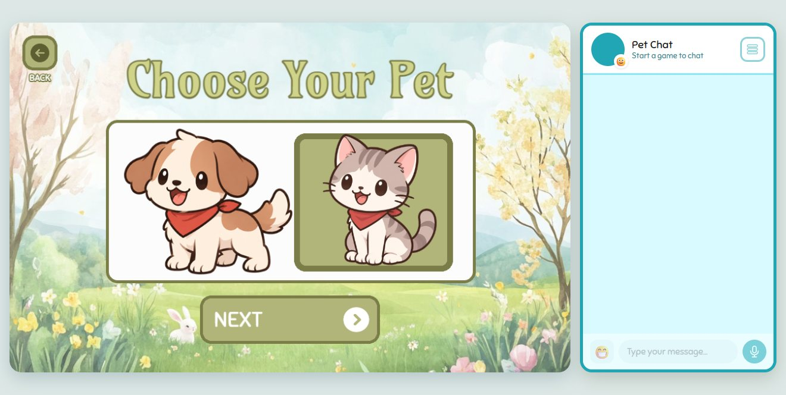
กดเลือกหมาหรือแมว แล้วกด NEXT
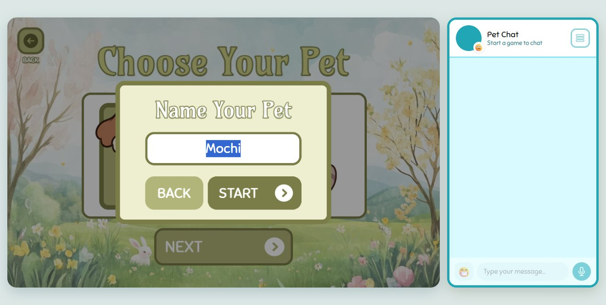
พิมพ์ชื่อ (ไม่เกิน 12 ตัวอักษร) แล้วกด START
- กดที่การ์ด หมา หรือ แมว (การ์ดที่เลือกจะเป็นกรอบสีเขียวเข้ม) แล้วกด NEXT
- พิมพ์ชื่อสัตว์ แล้วกด START หรือกด Enter (ถ้าไม่พิมพ์ จะใช้ชื่อ "Name")
- เกมจะแสดงหน้า Day 1 สั้น ๆ แล้วเข้าหน้าเลี้ยง
บันทึกอัตโนมัติ: สัตว์ตัวใหม่จะถูกบันทึกลงไฟล์ว่างช่องแรกทันที (มีทั้งหมด 3 ไฟล์) และบันทึกเองตลอดการเล่น ถ้าไฟล์เต็มทั้ง 3 ช่อง แชทจะเตือนให้ไปเลือกไฟล์ที่จะเขียนทับเองใน Menu → Save Game
2หน้าเลี้ยงสัตว์
หน้าที่ใช้เวลาเกือบทั้งเกม ด้านซ้ายคือสวนที่สัตว์อยู่ ด้านขวาคือแผงแชท
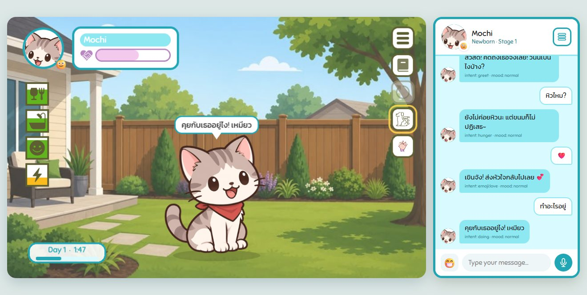
1รูปหัวสัตว์ (ซ้ายบน) กดเพื่อเปิดหน้า Profile อีโมจิมุมรูปบอกอารมณ์ตอนนี้
2ชื่อ + แถบสีชมพู คือค่า Social (ความสนิท) เพิ่มขึ้นเมื่อคุยกัน
3กล่องค่าสถานะ 4 ช่อง (ซ้าย) อิ่ม · สะอาด · สุข · พลัง กดเพื่อดูตัวเลข
4นาฬิกาวัน (ซ้ายล่าง) บอกวันที่และเวลาที่เหลือของวัน
5ตัวสัตว์ เดินไปมาในสวน กดที่ตัวเพื่อ ลูบหัว 💗
6ฟองอารมณ์ ขึ้นเมื่อสัตว์ต้องการอะไรบางอย่าง เช่น 🍖 หิว
7ปุ่มด้านขวา 5 ปุ่ม ดูตารางด้านล่าง
8แผงแชท คุยกับสัตว์ (ดูบทที่ 10)
ปุ่มด้านขวา
| ปุ่ม | ชื่อ | หน้าที่ |
|---|
| Menu | บันทึกเกม ตั้งค่าเวลา เสียง การควบคุมด้วยมือ และกลับหน้าปก |
| Evolution Book | หนังสือรวมสายวิวัฒนาการและร่างที่ค้นพบแล้ว |
| Rebirth | เริ่มใหม่เป็นร่างแรก กดได้เมื่อถึงร่างที่ 5 เท่านั้น (ปุ่มจางอยู่จนกว่าจะกดได้) |
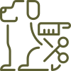 | Grooming | เมนูดูแลสัตว์: ให้อาหาร เล่น อาบน้ำ พักผ่อน |
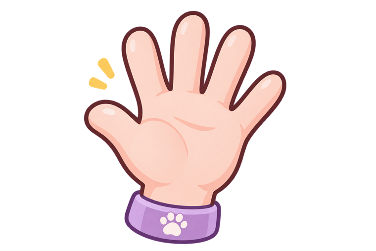 | Hand | เปิด/ปิดการควบคุมด้วยมือผ่านกล้อง (พื้นปุ่มเป็นสีฟ้าเมื่อเปิดอยู่) |
กรอบสีเหลืองกระพริบ คือสิ่งที่ AI แนะนำให้ทำตอนนี้ เริ่มจากกรอบรอบปุ่ม Grooming → พอเปิดเมนูจะกระพริบที่หมวด → แล้วที่ไอเทมที่ควรใช้ ทำตามกรอบเหลืองไปเรื่อย ๆ สัตว์จะสุขภาพดีเสมอ
ปุ่มหลอดไฟ 💡 (Hint) จะขึ้นกลางด้านบนเมื่อสัตว์ถึงร่างที่ 3 ดูบทที่ 9
3ค่าสถานะและ Social
ค่าสถานะมี 4 ค่า แต่ละค่าอยู่ระหว่าง 0–100 และ ลดลงเองตามเวลา สีในกล่องบอกระดับ: เขียว = มากกว่า 60 เหลือง = 31–60 แดง = 30 หรือน้อยกว่า
| ไอคอน | ค่า | ความหมาย | เพิ่มด้วย | ลดเร็วแค่ไหน |
|---|
| Fullness (อิ่ม) | ความหิว ถ้าต่ำกว่า 20 สุขภาพจะลดเร็วขึ้น | Feed | เร็วที่สุด (หมดใน ~8 นาที) |
| Clean (สะอาด/สุขภาพ) | ความสะอาดและสุขภาพ ต่ำมาก = ป่วย | Care | ปานกลาง (หมดใน ~11 นาที) |
| Happiness (สุข) | ความสุข ถ้าไม่ได้สนใจเกิน 1 นาที จะลดเร็วขึ้น (เหงา) | Play, ลูบหัว, คุย | ปานกลาง (~13 นาที) |
| Energy (พลัง) | แรง ใช้ไปกับการเล่น ถ้าเหลือ 3 หรือน้อยกว่า สัตว์จะหลับเอง | Rest (งีบ/นอน) | ช้า (~17 นาที) |
Social (แถบสีชมพู)
- บอกความสนิทระหว่างเรากับสัตว์ (0–100)
- เพิ่ม: คุยในแชท +3 ต่อข้อความ, ทำท่า 👍 ผ่านกล้อง +2
- ลด: ถ้าทั้งวันไม่คุยกันเลย จะลด 8 ตอนขึ้นวันใหม่
- ยิ่งสนิท สัตว์ยิ่งตอบอ้อน ๆ เช่น ถาม "รักฉันไหม" จะตอบต่างกันตามระดับ
เวลาเดินเฉพาะตอนอยู่หน้าเลี้ยง: ปิดเกม สลับแท็บ หรือเปิดเมนู/หนังสืออยู่ ค่าสถานะจะไม่ลด กลับมาเล่นต่อได้สบาย ๆ
4เมนู Grooming และไอเทม
กด Grooming เพื่อเปิดแผงด้านบน เลือกหมวด แล้วกดไอเทมที่ต้องการ (กดได้ทุก 1 วินาที) ปุ่ม ← กลับไปหน้าหมวด ปุ่ม ✕ ปิดเมนู ถ้ามีไอเทมมากกว่า 4 ชิ้น เลื่อนดูแถวถัดไปได้ด้วยล้อเมาส์หรือลากขึ้นลง
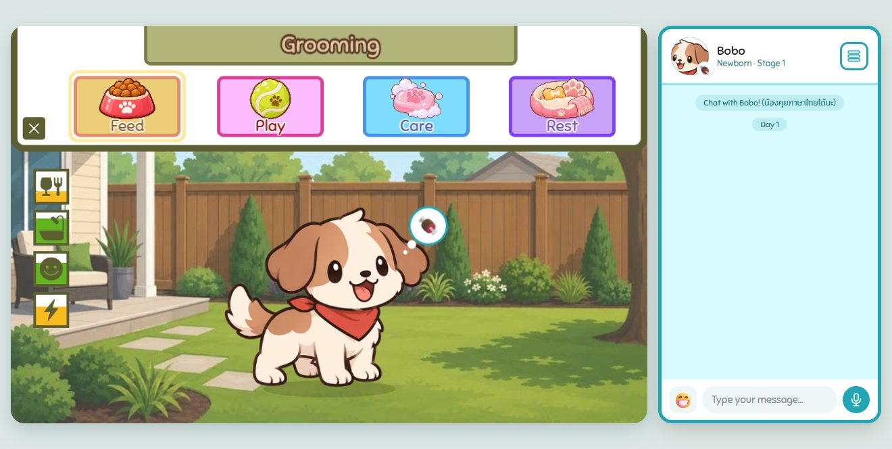
หน้าเลือกหมวด
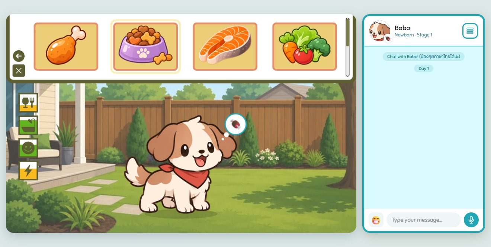
หน้าไอเทมหมวด Feed
🍔 Feed: อาหาร
| ไอเทม | ผล | | ไอเทม | ผล |
|---|
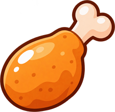 | Chicken Leg | อิ่ม +25 สุข +5 | 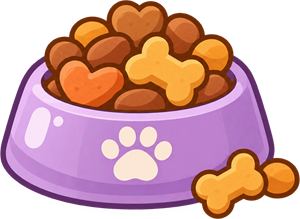 | Pet Food | อิ่ม +30 สุขภาพ +2 |
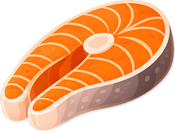 | Salmon | อิ่ม +22 สุขภาพ +6 | 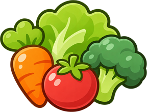 | Veggies | อิ่ม +15 สุขภาพ +8 |
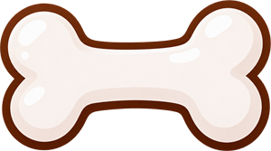 | Bone Treat | อิ่ม +8 สุข +10 | 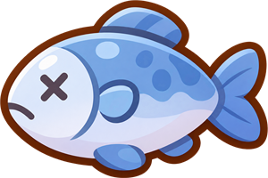 | Fish | อิ่ม +20 สุขภาพ +4 |
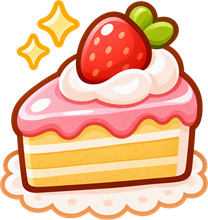 | Cake | อิ่ม +12 สุข +15 สุขภาพ −4 | 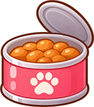 | Canned Food | อิ่ม +28 |
⚽ Play: ของเล่น
| ไอเทม | ผล | | ไอเทม | ผล |
|---|
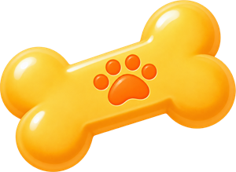 | Chew Toy | สุข +15 พลัง −8 | 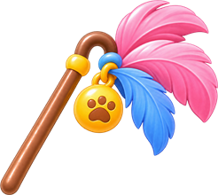 | Feather Wand | สุข +20 พลัง −12 |
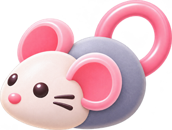 | Toy Mouse | สุข +16 พลัง −8 | 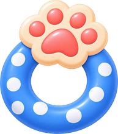 | Paw Ring | สุข +18 พลัง −10 |
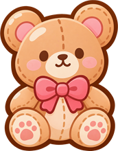 | Teddy Bear | สุข +12 พลัง −4 | 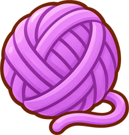 | Yarn Ball | สุข +18 พลัง −10 |
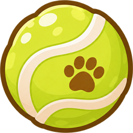 | Tennis Ball | สุข +25 พลัง −15 อิ่ม −6 | 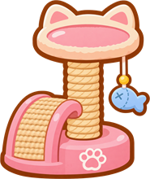 | Cat Tower | สุข +22 พลัง −14 |
🛁 Care: ดูแลความสะอาด
| ไอเทม | ผล | | ไอเทม | ผล |
|---|
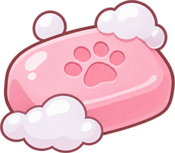 | Soap | สะอาด +25 สุข +2 | 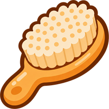 | Brush | สะอาด +12 สุข +6 |
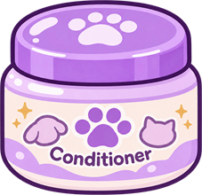 | Conditioner | สะอาด +15 | | Toothbrush | สะอาด +10 |
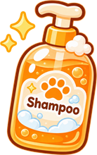 | Shampoo | สะอาด +28 | 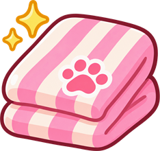 | Towel | สะอาด +8 สุข +4 |
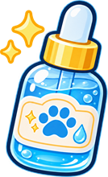 | Vitamins | สุขภาพ +20 (ใช้ตอนป่วย) | 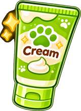 | Cream | สะอาด +14 |
💤 Rest: พักผ่อน
- Nap งีบ 30 วินาที แล้วตื่นเอง
- Sleep นอนยาวจนกว่าจะกดปลุก หรือจนขึ้นวันใหม่ (ตื่นมาพลังเต็ม)
- ระหว่างหลับ พลังเพิ่มขึ้น ฉากจะมืดลง และใช้ไอเทมอื่นไม่ได้
- กดการ์ดเดิมซ้ำ (ขึ้นคำว่า Wake up) เพื่อปลุก ถ้าปลุกตอนพลังยังไม่ถึง 50 สัตว์จะงอแง
ข้อควรระวัง: ให้อาหารตอนอิ่มเกิน 90 สัตว์จะเสียความสุขและสุขภาพ · ให้วิตามินตอนไม่ป่วยจะเสียความสุข · เล่นไม่ได้ถ้าพลังต่ำกว่า 15 (ให้พักก่อน)
5อารมณ์ของสัตว์
AI ดูค่าสถานะตลอดเวลาแล้วตัดสินว่าสัตว์รู้สึกอย่างไร อารมณ์แสดงที่ อีโมจิมุมรูปหัว ฟองเหนือตัว หัวแชท และ ท่าทาง ของสัตว์ บางครั้งสัตว์จะพูดเรียกเราในแชทเอง
| อารมณ์ | เกิดเมื่อ | ท่าทาง | ควรทำ |
|---|
| 😆 Happy | ทุกค่าสูงและมีความสุข | กระโดดดีใจ มีหัวใจลอย | เล่นและคุยต่อได้เลย |
| 🙂 Fine | สบายดี ไม่มีอะไรต้องการ | ท่าประจำร่าง | ลองคุยกัน |
| 🍖 Hungry | อิ่มต่ำกว่า 40 | ส่ายตัว | Feed |
| 🥺 Lonely | ไม่ได้สนใจนาน และไม่ค่อยมีความสุข | มองหาซ้ายขวา | เล่น ลูบหัว หรือคุย |
| 😢 Sad | สุขต่ำกว่า 35 | ตัวห่อ สีซีด มีหยดน้ำตา | Play |
| 🥱 Tired | พลังต่ำกว่า 30 | หาว ตัวเทา | Rest |
| 🤒 Sick / Dirty | สะอาดต่ำกว่า 35 | ตัวสั่น สีเขียว มีเชื้อโรคลอย | Care (ป่วยหนักใช้ Vitamins) |
| 😴 Sleeping | กำลังหลับ | เอียงตัว หายใจช้า มี 💤 | ปล่อยให้นอน |
ท่าประจำร่าง: พอเข้าสายแล้ว สัตว์จะเดินและยืนตามนิสัยของสาย เช่น สาย Sleepy ลอยไปมาช้า ๆ สาย Playful วิ่งเร็วและเบ่งกล้าม สาย Royal เดินสง่างาม
6วัน เวลา และ NEXT DAY
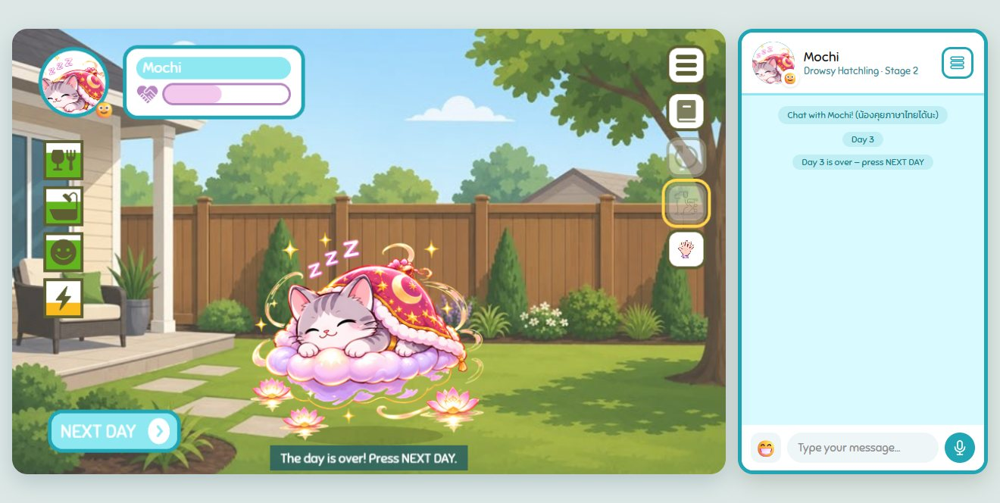
หมดวันแล้ว ปุ่ม NEXT DAY ขึ้นที่มุมซ้ายล่าง
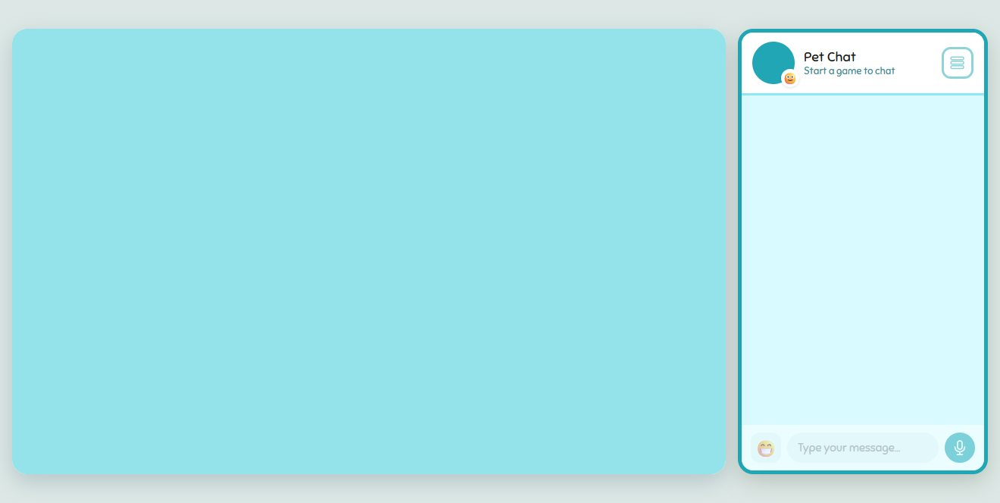
หน้าขึ้นวันใหม่
- 1 วัน = 3 นาที (เปลี่ยนเป็น 5 / 7 / 10 นาทีได้ใน Menu → Day Length)
- นาฬิกาวัน มุมซ้ายล่างบอก "Day 2 · 1:50" = วันที่ 2 เหลือ 1 นาที 50 วินาที
- เร่งเวลา x1 / x2 / x5 / x10 ได้ใน Menu → Time Speed
- เมื่อ หมดวัน: ทุกอย่างหยุดนิ่ง ใช้ไอเทมไม่ได้ ปุ่ม NEXT DAY จะขึ้นมาแทนนาฬิกา
- กด NEXT DAY → AI ตัดสินการเลี้ยงของวันนั้น → ถ้าเปลี่ยนร่างจะมีฉากวิวัฒนาการ → เริ่มวันใหม่
สำคัญ: การตัดสินดูการเลี้ยงของ วันนั้นวันเดียว ถ้าอยากได้สายไหน ต้องเลี้ยงแนวนั้นให้ชัดตลอดทั้งวัน
7การวิวัฒนาการ
แต้มการดูแล
ทุกครั้งที่ใช้ไอเทม เกมจะเก็บ "แต้ม" ไว้ใน 4 ด้าน แล้วดูตอนจบวันว่าแต่ละด้านคิดเป็นกี่ % ของทั้งหมด
| ด้าน | ได้แต้มจาก |
|---|
| 🍔 Feed | ให้อาหาร ครั้งละ 5–15 แต้ม (ยิ่งหิว ยิ่งได้มาก) ตอนอิ่มเกิน 90 ได้ 3 แต้ม |
| ⚽ Play | เล่น ครั้งละ 5–15 แต้ม |
| 🛁 Care | อาบน้ำ/ดูแล ครั้งละ 5–15 แต้ม ตอนสะอาดเกิน 90 ได้ 4 แต้ม |
| 💤 Rest | กดงีบหรือนอน 3–15 แต้ม และได้เพิ่มเองตลอดเวลาที่นอน (นอนยาวด้วย Sleep ได้มากกว่างีบ) |
| 💬 Chat | นับจำนวนข้อความที่คุยในวันนั้น (ใช้กับสาย Leader) |
ขั้นตอนการเติบโต
- ร่าง 1 Newborn: ทุกตัวเริ่มที่นี่ จบวันแรกถ้าเลี้ยงตรงแนวสายไหน จะได้ ร่าง 2 ของสายนั้น ถ้าไม่ตรงสายไหนเลย จะยังเป็น Newborn ต่อ (ไม่มีบทลงโทษ)
- ร่าง 2–4: แต่ละวันถ้าเลี้ยงตรงแนว สายเดิม จะขึ้น 1 ร่าง (วันละไม่เกิน 1 ร่าง)
- ร่าง 5 Ultimate: ร่างสุดท้าย ชื่อสายถูกเปิดเผยในหนังสือ ร่างไม่เปลี่ยนและไม่ถอยอีก กด Rebirth เพื่อเริ่มใหม่ได้ (หนังสือยังอยู่)
ถ้าเลี้ยงไม่ตรงทาง
| ผลตอนจบวัน | เกิดอะไรขึ้น |
|---|
| ✅ ตรงเป้าของสาย | ขึ้น 1 ร่าง |
| 🙂 เกือบถึงเป้า | คงร่างเดิม ไม่นับว่าพลาด |
| ⚠️ พลาดเป้า | แชทจะเตือน ถ้าพลาด ติดกัน 2 วัน (ร่าง 2–3) หรือ 3 วัน (ร่าง 4) จะ ถอยกลับ 1 ร่าง |
ฉากวิวัฒนาการ
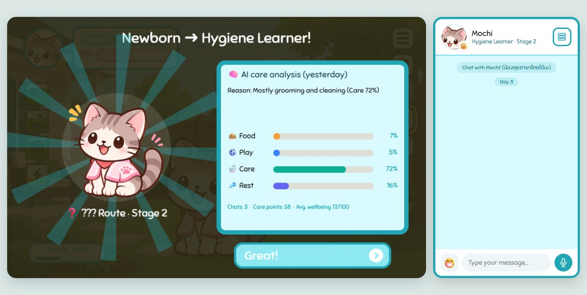
หลังเปลี่ยนร่าง จะเห็น ผลวิเคราะห์ของ AI: เหตุผลที่ได้ร่างนี้ และแถบสัดส่วน Food / Play / Care / Rest ของเมื่อวาน ใช้ดูว่าเลี้ยงไปทางไหนมากที่สุด ชื่อสายจะแสดงเป็น ??? จนกว่าจะเลี้ยงสายนั้นถึงร่างที่ 5
87 สายวิวัฒนาการ
ภาพแสดงร่าง 2–5 ของหมา (บน) แต่ละสายของแมวก็มีหน้าตาคล้ายกันในแบบแมว เงื่อนไขเขียนเป็น "ร่าง 1–2 / ร่าง 3 ขึ้นไป" เพราะช่วงแรกเกณฑ์จะง่ายกว่า
👑 Royal: สายสมดุล
เล่นยังไง: สลับ ให้อาหาร → เล่น → อาบน้ำ → งีบ ให้ครบทุกอย่างพอ ๆ กันทั้งวัน
เงื่อนไข: ทุกด้าน (Feed/Play/Care/Rest) อยู่ระหว่าง 8–45% / 10–45% และแต้มรวมอย่างน้อย 24 / 40
นิสัย: สุภาพสง่างาม ร่างสูงพูดแบบกษัตริย์ "ข้า/เจ้า… จงจดจำไว้ 👑"
ชอบ: ชายามบ่าย สวนดอกไม้ ของสีทอง
🎩 Leader: สายลับ
เล่นยังไง: เลี้ยงสมดุลแบบ Royal และ คุยแชทเยอะ ๆ ทุกวัน
เงื่อนไข: สมดุลแบบ Royal + คุยอย่างน้อย 4 / 8 ข้อความต่อวัน
นิสัย: นักวางแผน ร่างสูงกล่าวสุนทรพจน์ถึง "พี่น้องประชาชน" 🎩
หมายเหตุ: ซ่อนอยู่ในหนังสือจนกว่าจะปลดล็อกได้เอง
💤 Sleepy: สายขี้เซา
เล่นยังไง: กด Sleep ให้นอนทั้งวัน หรืองีบบ่อย ๆ อย่าปลุกไปทำอย่างอื่น
เงื่อนไข: Rest อย่างน้อย 40% / 50% และ Feed, Play, Care แต่ละอย่างไม่เกิน 30% / 20%
นิสัย: หาวตลอด พูดไปหลับไป ร่างสูงพูดเหมือนมังกรโบราณ
ชอบ: นมอุ่น ๆ เมฆนุ่ม ๆ การงีบยาว ๆ
🐷 Gluttony: สายตะกละ
เล่นยังไง: ให้อาหารอย่างเดียว ไม่เล่น ไม่อาบน้ำ (ให้นอนพักได้)
เงื่อนไข: นับเฉพาะ Feed/Play/Care: Feed มากที่สุดและอย่างน้อย 35% / 45%, Play กับ Care ไม่เกิน 30% / 20%
นิสัย: พูดถึงของกินตลอด ร่างสูงเป็นจอมตะกละสั่งให้นำอาหารมาถวาย
ระวัง: กินจนอิ่มเกินบ่อย ๆ สัตว์จะป่วยง่าย
🧼 Self-Care: สายรักความสะอาด
เล่นยังไง: อาบน้ำ/ดูแลอย่างเดียว ไม่ให้ขนม ไม่เล่น (ให้นอนพักได้)
เงื่อนไข: นับเฉพาะ Feed/Play/Care: Care มากที่สุดและอย่างน้อย 35% / 45%, Play กับ Feed ไม่เกิน 30% / 20%
นิสัย: ร่าเริง หอมฟุ้ง ร่างสูงไม่ยอมให้มือสกปรกแตะตัว
ชอบ: ฟองสบู่ ผลไม้สด ขนเงางาม
🏋️ Playful: สายฟิต
เล่นยังไง: เล่นเยอะ ๆ พอเหนื่อยให้งีบ แล้วเล่นต่อ ไม่ให้อาหาร ไม่อาบน้ำ
เงื่อนไข: นับเฉพาะ Feed/Play/Care: Play มากที่สุดและอย่างน้อย 35% / 45%, Care กับ Feed ไม่เกิน 30% / 20%
นิสัย: พลังเยอะ เสียงดัง ร่างสูงเป็นพี่ชายนักกล้ามคุยเรื่องโปรตีน 💪
ชอบ: วิ่ง ยกเวท อกไก่
👽 Neglect: สายถูกทอดทิ้ง
เล่นยังไง: แทบไม่ดูแลเลยทั้งวัน ปล่อยให้เวลาผ่านไป
เงื่อนไข: แต้มการดูแลรวมทั้งวันน้อยกว่า 15
นิสัย: เงียบ เหงา พูดแผ่ว ร่างสูงพูดภาษาต่างดาวทั้งประโยค
หมายเหตุ: ระบบตรวจสายนี้เป็นอันดับแรก ถ้าดูแลน้อยมาก จะได้สายนี้ก่อนสายอื่น
ถ้าผ่านหลายสายพร้อมกัน: ตอนเลือกสายครั้งแรก (ร่าง 1 → 2) ระบบตรวจตามลำดับ Neglect → Leader → Royal → Sleepy → Gluttony → Self-Care → Playful แล้วใช้สายแรกที่ผ่าน
10คุยกับสัตว์ (แชท)
แผงด้านขวาใช้คุยกับสัตว์ได้ตลอดตอนอยู่หน้าเลี้ยง สัตว์ตอบเป็น ภาษาไทย ตามอารมณ์ ค่าสถานะ ความสนิท และ นิสัยของร่างปัจจุบัน
| ช่องทาง | วิธีใช้ |
|---|
| ⌨️ พิมพ์ | พิมพ์ในช่อง Type your message... แล้วกด Enter หรือปุ่มส่ง |
| 🎤 พูด | ตอนช่องพิมพ์ว่าง ปุ่มขวาเป็นไมโครโฟน กดแล้วพูดภาษาไทย (ใช้ได้ใน Chrome / Edge) |
| ☰ ประโยคลัด | ปุ่มมุมขวาบนของแผง มีประโยคสำเร็จรูป เช่น "หิวไหม?" "ไปเล่นกัน!" |
| 😁 อีโมจิ | ปุ่มซ้ายของช่องพิมพ์ ส่งอีโมจิอย่างเดียวได้ สัตว์จะตอบตามความหมาย เช่น ❤️ เขิน, 🍖 อยากกิน, ⚽ ชวนเล่น |
ลองพูดแบบนี้
สวัสดีหิวไหม?ทำอะไรอยู่ง่วงไหมไปเล่นกัน!อาบน้ำกันรักฉันไหมเหงาไหมจะโตเป็นอะไร?ชอบกินอะไรงานอดิเรกคืออะไรเล่ามุกหน่อยร้องเพลงให้ฟังกี่โมงแล้ว12+5 เท่าไหร่วันนี้เหนื่อยจังฝันดีนะ❤️😂🍖
- คุยต่อเนื่อง: ถ้าสัตว์ถาม เช่น "ไปเล่นกันไหม?" ตอบ "ได้" หรือ "ไม่เอา" สัตว์จะคุยต่อเรื่องเดิม
- ถามเรื่องร่าง: พิมพ์ "จะโตเป็นอะไร?" สัตว์จะบอกว่าวันนี้เลี้ยงตรงทางไหม (แต่ไม่บอกชื่อสาย)
- ข้อความใต้คำตอบ (intent · mood) บอกว่า AI เข้าใจข้อความเป็นเรื่องอะไร และสัตว์อารมณ์อะไร
- ตอนหลับ สัตว์จะตอบแบบละเมอ
- การคุยทุกข้อความเพิ่ม Social +3 และนับเป็นการคุยสำหรับสาย Leader
นิสัยเปลี่ยนตามร่าง: ร่างแรกพูดเหมือนเด็กมีเสียง โฮ่ง/เหมียว ร่าง 2–3 เริ่มมีนิสัยของสาย ร่าง 4–5 นิสัยชัดเต็มที่ เช่น สาย Royal ใช้ "ข้า/เจ้า" สาย Leader ใช้ "ผม" แถลงนโยบาย และสาย Neglect ร่างสูงพูดภาษาต่างดาว
11ควบคุมด้วยมือผ่านกล้อง
เล่นได้โดยไม่ต้องจับเมาส์ ใช้มือหน้าเว็บแคมแทน บนจอจะมี ถุงมือเล็ก ๆ ลอยตามมือ กดปุ่มอะไรก็ได้เหมือนแตะจอมือถือ ภาพจากกล้อง ประมวลผลในเครื่องเท่านั้น ไม่ส่งไปที่ใด
เปิดใช้งาน
- กดปุ่ม มือ ✋ ที่หน้าปก หรือปุ่ม Hand ด้านขวาของหน้าเลี้ยง
- อนุญาตให้เบราว์เซอร์ใช้กล้อง (ใช้ได้เมื่อเปิดผ่านลิงก์ https หรือในเครื่อง)
- ครั้งแรกจะมี หน้าสอนเล่น 3 ขั้น ทำตามได้เลย หรือกด Skip เปิดดูใหม่ได้ที่ปุ่ม ? ในแผงกล้อง
ท่ามือ
| ท่า | ผล |
|---|
| ✋ แบมือแล้วขยับ | เลื่อนถุงมือ (ถุงมือตามกลางฝ่ามือ) |
| ✊ กำมือ แล้วแบ | กดปุ่ม (ตอนกำ ถุงมือหยุดนิ่งแป๊บนึง กันเลื่อนหลุดปุ่ม) |
| ✊ กำค้างแล้วขยับ | ลาก เช่น เลื่อนรายการไอเทม (ถุงมือเรืองแสงสีเหลือง) |
| ⏳ ชี้ค้างบนปุ่ม | วงกลมสีฟ้าค่อย ๆ เต็ม แล้วกดให้เอง (1 วินาที หรือ 0.7 วินาทีในโหมด Easy) |
| 🤚 วางฝ่ามือบนตัวสัตว์ | ลูบหัว 💗 |
| ✌️ ชูสองนิ้วค้าง | ทักทาย สัตว์กระโดดดีใจ |
| 👍 ยกนิ้วโป้งค้าง | ชม สัตว์ดีใจ Social +2 (ได้ทุก 8 วินาที) |
แผงกล้อง (ใต้หัวแชท)
- จุดสี: เขียว = เห็นมือ · เหลือง = ยังไม่เห็นมือ · แดง = กล้องใช้ไม่ได้
- แถวไอคอน ✋ ✊ ✌️ 👍 ไอคอนที่สว่างคือท่าที่ระบบเห็นอยู่
- ปุ่ม ? หน้าสอนเล่น · 👁 ซ่อน/แสดงภาพกล้อง · ✕ ปิดการควบคุมด้วยมือ
ถ้าใช้ยาก: ไปที่ Menu ตั้ง Hand: Easy ถุงมือจะนิ่งขึ้นและไม่ต้องขยับแขนมาก · ถ้าปุ่มถูกกดเองบ่อยเกินไป ปิด Dwell: OFF · นั่งห่างกล้องประมาณหนึ่งช่วงแขน ให้เห็นมือทั้งมือในที่ที่มีแสงพอ
12เมนูและการบันทึกเกม
Load Game (กด Continue ที่หน้าปก)
Menu
| ปุ่ม | หน้าที่ |
|---|
| Resume | กลับไปเล่นต่อ |
| Save Game | เลือกไฟล์ที่จะบันทึก หรือย้ายไปไฟล์อื่น (บันทึกแล้วจะบันทึกอัตโนมัติต่อไป) |
| Day Length | ความยาว 1 วัน: 3 / 5 / 7 / 10 นาที |
| Time Speed | เร่งเวลา x1 / x2 / x5 / x10 |
| Music · Sound | เปิด/ปิดเพลงพื้นหลังและเสียงเอฟเฟกต์ |
| Hand · Dwell | ความไวของมือ (Normal / Easy) และการชี้ค้างเพื่อกด (ON / OFF) |
| Main Menu | กลับหน้าปก (บันทึกให้ก่อนออก) |
ไฟล์เซฟ 3 ไฟล์
- แต่ละไฟล์แสดง ชื่อ ร่าง ค่า Social วัน เวลาที่เล่น และเวลาที่บันทึกล่าสุด
- LOAD เล่นต่อ (หรือกดการ์ดที่เลือกอยู่ซ้ำ) · COPY คัดลอกไปอีกไฟล์ (กด COPY แล้วเลือกไฟล์ปลายทาง) · CLEAR ลบไฟล์ (ถามยืนยันก่อน) · BACK กลับ
- เกม บันทึกอัตโนมัติ ทุก 5 วินาที ทุกครั้งที่ใช้ไอเทม ขึ้นวันใหม่ และตอนปิดหน้า
เซฟอยู่ในเบราว์เซอร์: เซฟเก็บในเบราว์เซอร์ของเครื่องที่เล่น เปิดคนละเบราว์เซอร์ (เช่น Chrome กับ Edge) หรือคนละลิงก์ จะเป็นเซฟคนละชุด · โหมดไม่ระบุตัวตนจะลบเซฟเมื่อปิดหน้าต่าง · การล้างข้อมูลเบราว์เซอร์จะลบเซฟด้วย
13เคล็ดลับและคำถามที่พบบ่อย
เคล็ดลับ
- ตั้งใจเลี้ยงแนวเดียวทั้งวัน แล้วดูผลวิเคราะห์ในฉากวิวัฒนาการว่าสัดส่วนเป็นอย่างไร
- ใช้ Hint ตั้งแต่ร่าง 3 เพื่อเช็กว่าวันนี้เลี้ยงตรงทางหรือยัง ก่อนกด NEXT DAY
- อยากรู้ว่าตอนนี้ควรทำอะไร ดูกรอบสีเหลืองกระพริบ หรือพิมพ์ถาม "อยากทำอะไร?"
- สาย Playful เล่นจนเหนื่อยแล้วให้งีบได้ ไม่ทำให้เสียสาย
- สาย Sleepy กด Sleep ครั้งเดียวแล้วปล่อยนอนทั้งวัน ง่ายที่สุด
- สาย Leader คุยกับสัตว์เป็นระยะระหว่างวัน ใช้ประโยคลัดใน ☰ ได้
- อยากสะสมครบทุกสาย: ถึงร่าง 5 แล้วกด Rebirth เพื่อเริ่มสายใหม่ หนังสือยังเก็บสายที่ปลดล็อกไว้ หรือใช้ COPY คัดลอกไฟล์ไว้ลองหลายทาง
คำถามที่พบบ่อย
| คำถาม | คำตอบ |
|---|
| ทำไมกดไอเทมไม่ได้ | อาจหมดวันแล้ว (กด NEXT DAY), สัตว์หลับอยู่ (ปลุกที่หมวด Rest), หรือกดเร็วเกินไป (รอ 1 วินาที) |
| ทำไมสัตว์ไม่เปลี่ยนร่าง | วันนั้นเลี้ยงหลายแนวปนกัน ไม่ตรงสายไหนชัด ดูสัดส่วนในฉากวิวัฒนาการหรือ Hint |
| ทำไมสัตว์ถอยร่าง | พลาดเป้าของสายติดกัน 2–3 วัน เลี้ยงกลับมาแนวเดิมเพื่อขึ้นร่างอีกครั้ง |
| ปิดเกมแล้วสัตว์จะหิวไหม | ไม่ เวลาเดินเฉพาะตอนอยู่หน้าเลี้ยงเท่านั้น |
| ไม่มีเสียง | เบราว์เซอร์จะเปิดเสียงหลังคลิกครั้งแรก และเช็ก Music / Sound ในเมนู |
| กล้องใช้ไม่ได้ | ต้องอนุญาตกล้องในเบราว์เซอร์ และเปิดผ่านลิงก์ https หรือในเครื่อง (localhost) |
| ไมค์ในแชทใช้ไม่ได้ | ใช้ได้ใน Chrome และ Edge และต้องอนุญาตไมโครโฟน |
ขอให้สนุกกับการเลี้ยงนะ! 🐾